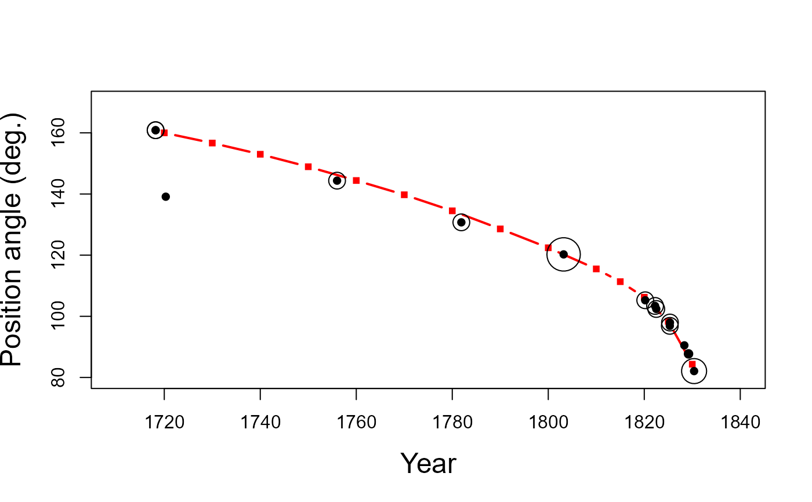

John F. W. Herschel's Data on the Orbit of the Twin Stars \(\gamma\) Virginis
Virginis.RdIn 1833 J. F. W. Herschel published two papers in the Memoirs of the Royal Astronomical Society detailing his investigations of calculating the orbits of twin stars from observations of their relative position angle and angular distance.
In the process, he invented the scatterplot, and the use of visual smoothing to obtain a reliable curve that surpassed the accuracy of individual observations (Friendly & Denis, 2005). His data on the recordings of the twin stars \(\gamma\) Virginis provide an accessible example of his methods.
Format
Virgins: A data frame with 18 observations on the following 6 variables giving
the measurements of position angle and angular distance between the central (brightest)
star and its twin, recorded by various observers over more than 100 years.
yearyear ("epoch") of the observation, a decimal numeric vector
posanglerecorded position angle between the two stars, a numeric vector
distanceseparation distance between the two stars, a numeric vector
weighta subjective weight attributed to the accuracy of this observation, a numeric vector
notesHerschel's notes on this observation, a character vector
authorityA simplified version of the notes giving just the attribution of authority of the observation, a character vector
Virgins.interp: A data frame with 14 observations on the following 4 variables, giving the
position angles and angular distance that Herschel interpolated from his smoothed curve.
yearyear ("epoch") of the observation, a decimal numeric vector
posanglerecorded position angle between the two stars, a numeric vector
distanceseparation distance, calculated \(1/sqrt(velocity)\)
velocityangular velocity, calculated as the instantaneous slopes of tangents to the smoothed curve, a numeric vector
Details
The data in Virginis come from the table on p. 35 of the “Micrometrical Measures”
paper.
The weight variable was assigned by the package author, reflecting Herschel's comments
and for use in any weighted analysis.
In the notes and authority variables, "H" refers to William Herschel
(John's farther, the discoverer of the planet Uranus), "h" refers to John Herschel
himself, and "Sigma", rendered \(\Sigma\) in the table on p. 35 refers to
Joseph Fraunhofer.
The data in Virginis.interp come from Table 1 on p. 190 of the supplementary
paper.
Source
Herschel, J. F. W. III. Micrometrical Measures of 364 Double Stars with a 7-feet Equatorial Acromatic Telescope, taken at Slough, in the years 1828, 1829, and 1830 Memoirs of the Royal Astronomical Society, 1833, 5, 13-91.
Herschel, J. F. W. On the Investigation of the Orbits of Revolving Double Stars: Being a Supplement to a Paper Entitled "Micrometrical Measures of 364 Double Stars" Memoirs of the Royal Astronomical Society, 1833, 5, 171-222.
References
Friendly, M. & Denis, D. The early origins and development of the scatterplot. Journal of the History of the Behavioral Sciences, 2005, 41, 103-130.
Examples
data(Virginis)
data(Virginis.interp)
# Herschel's interpolated curve
plot(posangle ~ year, data=Virginis.interp,
pch=15, type="b", col="red", cex=0.8, lwd=2,
xlim=c(1710,1840), ylim=c(80, 170),
ylab="Position angle (deg.)", xlab="Year",
cex.lab=1.5)
# The data points, and indication of their uncertainty
points(posangle ~ year, data=Virginis, pch=16)
points(posangle ~ year, data=Virginis, cex=weight/2)
